Econometrics I
TA Christian Alemán
Session 5: Friday 18, February 2022
Activity 1: Simulating Consistency of OLS
Consider the model
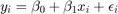
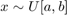
We will show consistency of 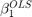
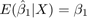
Lets assume different distributions of 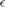
- Normal : 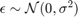
- Poisson: 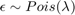
- Pareto: 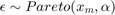
We will Simulate a population of 50000
Make 10000 draws of sample of n = [25,100,1000,10000];
% Housekeeping clc close all clear all % Set seed for reproductibility % Options opt.load_betas = 1; % 1:load betas to save time % Parameters par.N = 100000; % Population par.n_ms = 10000; % Number of MC simulations par.n_grid = [25,100,1000,10000]; % Sample size par.beta0 = 1; par.beta1 = 2; % Parameters distributions of \epsilon: par.sigma = 1; % Standard deviation normal par.lambda = 1; % Poisson Rate par.k = 1; % Shape if >=1 var is infinity try 4 par.sigma_gp = 2; % Scale par.theta = 0; par.ub = 100; par.lb = 0; % Generate population vars.e_pop = NaN(par.N,3); for i = 1:3 if i == 1 rng(123+i) vars.e_pop(:,1) = par.sigma.*randn(par.N,1); vars.e_pop(:,1) = vars.e_pop(:,1)-mean(vars.e_pop(:,1)); % demean elseif i == 2 rng(123+i) vars.e_pop(:,2) = sim_poisson(par.N,par.lambda); vars.e_pop(:,2) = vars.e_pop(:,2)-mean(vars.e_pop(:,2)); elseif i == 3 rng(123+i) vars.e_pop(:,3) = gprnd(par.k,par.sigma_gp,par.theta,par.N,1); %vars.e_pop(:,3) = sim_gp(par.N,par.k,par.sigma_gp,par.theta); vars.e_pop(:,3) = vars.e_pop(:,3)-mean(vars.e_pop(:,3)); end end vars.x_pop = unifrnd(par.lb,par.ub,par.N,1); vars.y_pop = par.beta0 +par.beta1.*repmat(vars.x_pop,1,3) +vars.e_pop; % Here we do the sampling and compute the distributions of parameters % Initialize holder vars.hbeta1 = NaN(par.n_ms,4,3); if opt.load_betas ==1 load('data') vars.hbeta1 = mc_data; else % Generate NS number of samples from the universe. for i = 1:3 % Distributions for ii = 1:4 % Sample sizes disp([i,ii]) for j = 1:par.n_ms % Number of MC simulations I_sample = randsample(par.N,par.n_grid(ii)); x_sample = vars.x_pop(I_sample); y_sample = vars.y_pop(I_sample,i); % Run regression X = [ones(par.n_grid(ii),1),x_sample]; Y = y_sample; hat_betas = X\Y; % Save betas vars.hbeta1(j,ii,i) = hat_betas(2); end end end mc_data = vars.hbeta1; save('data','mc_data') %save('data_inc','data_income') end vars.kdensity = NaN(100,4,3); % Initialize Kernel Density par.support = NaN(100,4,3); for i = 1:3 % Distributions for ii = 1:4 % Sample sizes % Do kernel approximations to smooth histograms [vars.kdensity(:,ii,i),par.support(:,ii,i)] = ksdensity(vars.hbeta1(:,ii,i),'Kernel','normal'); end end figure(1) hold on p1 = plot(par.support(:,1,1),vars.kdensity(:,1,1),'r-','linewidth',1.2); p2 = plot(par.support(:,2,1),vars.kdensity(:,2,1),'r--','linewidth',1.2); p3 = plot(par.support(:,3,1),vars.kdensity(:,3,1),'r-.','linewidth',1.2); p4 = plot(par.support(:,4,1),vars.kdensity(:,4,1),'r.','linewidth',1.2); xlim([1.98,2.02]) legend([p1 p2 p3 p4],{'$n=25$','$n=100$','$n=1000$','$n=10000$'},'interpreter','latex') title('Kernel Density Approximations, Normal Errors') ylabel('Density') figure(2) hold on p1 = plot(par.support(:,1,2),vars.kdensity(:,1,2),'r-','linewidth',1.2); p2 = plot(par.support(:,2,2),vars.kdensity(:,2,2),'r--','linewidth',1.2); p3 = plot(par.support(:,3,2),vars.kdensity(:,3,2),'r-.','linewidth',1.2); p4 = plot(par.support(:,4,2),vars.kdensity(:,4,2),'r.','linewidth',1.2); xlim([1.98,2.02]) legend([p1 p2 p3 p4],{'$n=25$','$n=100$','$n=1000$','$n=10000$'},'interpreter','latex') title('Kernel Density Approximations, Poisson Errors') ylabel('Density') figure(3) hold on p1 = plot(par.support(:,1,3),vars.kdensity(:,1,3),'r-','linewidth',1.2); p2 = plot(par.support(:,2,3),vars.kdensity(:,2,3),'r--','linewidth',1.2); p3 = plot(par.support(:,3,3),vars.kdensity(:,3,3),'r-.','linewidth',1.2); p4 = plot(par.support(:,4,3),vars.kdensity(:,4,3),'r.','linewidth',1.2); xlim([-4,10]) legend([p1 p2 p3 p4],{'$n=25$','$n=100$','$n=1000$','$n=10000$'},'interpreter','latex') title('Kernel Density Approximations, Pareto Errors') ylabel('Density') figure(4) hold on p4 = plot(par.support(1:30,4,3),vars.kdensity(1:30,4,3),'r-','linewidth',1.2); legend([p4],{'$n=10000$'},'interpreter','latex') title('Kernel Density Approximations, Pareto Errors') ylabel('Density')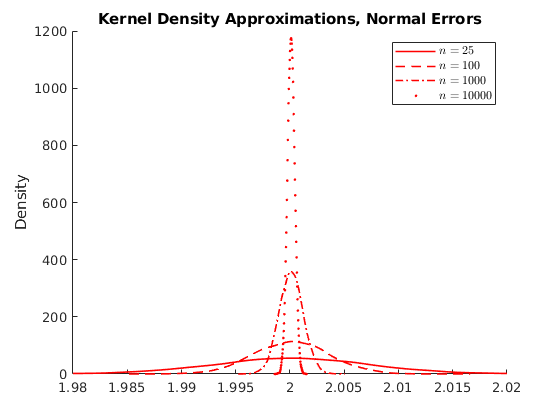 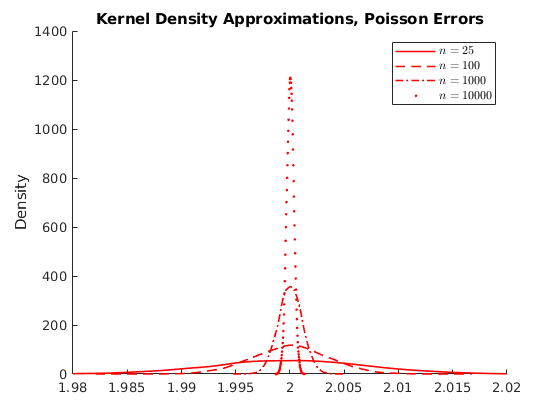 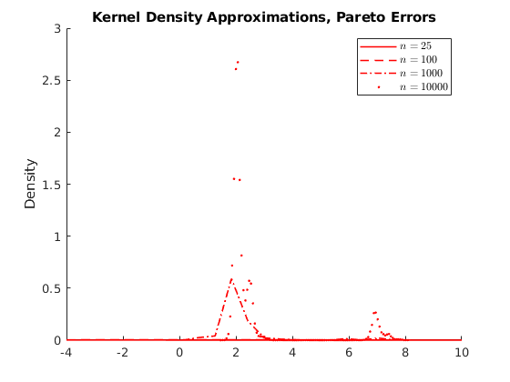 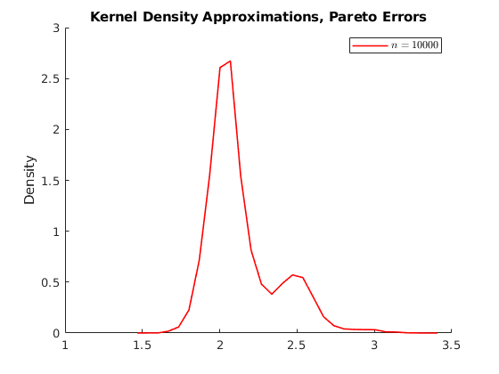
Activity 1.1: Asymtotic Normality
Normality test for the last case H0: x comes from a standard normal distribution
name = {'Normal:','Poisson:','Pareto:'};
for i = 1:3
disp(name{i})
test_cdf = makedist('normal','mu',mean(vars.hbeta1(:,4,i)),'sigma',std(vars.hbeta1(:,4,i)));
%test_cdf = [vars.hbeta1(:,4,i),cdf('normal',vars.hbeta1(:,4,i),mean(vars.hbeta1(:,4,i)),std(vars.hbeta1(:,4,i)))];
h = kstest(vars.hbeta1(:,4,i),'CDF',test_cdf); % Test if the data are from the hypothesized distribution.
if h==1
disp('We reject the Null: Then distribution is not normal')
else
disp('We CANNOT reject the Null: Then distribution is normal')
end
end
Normal: We CANNOT reject the Null: Then distribution is normal Poisson: We CANNOT reject the Null: Then distribution is normal Pareto: We reject the Null: Then distribution is not normal
Activity 2: Testing Non Linear Constrains WALD test
Consider the following consumption function with different short- and long-run marginal propensities to consume (MPC).
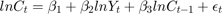
- 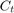 is Consumption at 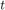 (in real USD)
- 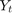 is Disposable Income at (in real USD)
- 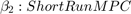
- 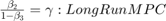
We are interested in knowing whether 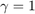
load('data_inc2') %{ 1: C0 2: C1 3: Y %} data_income = log(data_income); n = size(data_income,1); K = 3; X = [ones(n,1),data_income(:,3),data_income(:,2)]; y = data_income(:,1); % Compute OLS betas = X\y; hgamma = betas(2)/(1-betas(3)); Param = {'beta 1';'beta 2';'beta 3';'gamma'}; hat_betas = [betas;hgamma]; tab_B = table(Param,hat_betas); disp('OLS Estimates:') disp(tab_B)
OLS Estimates:
Param hat_betas
__________ _________
{'beta 1'} 0.0031416
{'beta 2'} 0.074958
{'beta 3'} 0.92462
{'gamma' } 0.99446
Predict errors
he = y-X*betas; hsigma = (he'*he)/(n-K); % Compute Asymtotic VarCovar Avar_beta = hsigma.*(inv(X'*X)); AVCV = sqrt((diag(Avar_beta))); % Variance Covariance % Compute the analytical derivatives: % Derivative: \partial beta2/(1-beta3)\partial(\beta) grad = [0;1/(1-betas(3));betas(2)/(1-betas(3))^(2)]; % Compute the asymtotic Variance Avar_Cbeta = grad'*Avar_beta*grad; % Since we are testing one restriction we compute the z-score: % H0: gamma = 1 z = (hgamma-1)./sqrt(Avar_Cbeta); disp(['Z-Score = ',num2str(z)]) disp('We cannot reject \gamma=1')
Z-Score = -0.33863 We cannot reject \gamma=1
Activity 3: Bootstrap standard errors
3.1 Non-Parametric Bootstrap
- Generate B samples with replacement of pairs 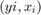
- Estimate the bootstrap 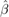 by fitting the model
- Compute the standard errors
par.n = par.n_grid(3); % Sample size par.K = 2; vars.x =1+2*randn(par.n,2) ; vars.x(:,1) =4+vars.x(:,1); vars.e =2*randn(par.n,1) ; vars.y = vars.x*ones(2 ,1) + vars.e ; if par.K ==3 vars.x = [ones(par.n,1),vars.x]; vars.y = par.beta0+vars.x(:,2:end)*ones(2 ,1) + vars.e ; end vars.hbeta = vars.x\vars.y ; vars.ehat = vars.y-vars.x*vars.hbeta; par.B = 1000;% hbeta_sample =NaN(par.B,par.K); for i = 1:par.B I_sample = ceil(par.n*rand(1,par.n)); ysample = vars.y(I_sample); xsample(:,1) = vars.x(I_sample,1); xsample(:,2) = vars.x(I_sample,2); hbeta_sample(i,:) = (xsample\ysample)'; end diff = hbeta_sample-repmat(vars.hbeta',par.B,1); bootVCV = diff'*diff/par.B; OLSVCV = (vars.e'*vars.e)/par.n*inv(vars.x'*vars.x); vars.SEbeta_hat_OLS = sqrt(diag(OLSVCV)); vars.SEbeta_hat_boot = sqrt(diag(bootVCV)); Param = {'beta 0';'beta 1'}; if par.K ==3 Param = {'beta 0';'beta 1','beta2'}; end SE_OLS = vars.SEbeta_hat_OLS; SE_Bootstrap = vars.SEbeta_hat_boot; tab_SE = table(Param,SE_OLS,SE_Bootstrap); disp('Non-Parametric Standard Errors:') disp(tab_SE)
Non-Parametric Standard Errors:
Param SE_OLS SE_Bootstrap
__________ ________ ____________
{'beta 0'} 0.012984 0.012932
{'beta 1'} 0.031073 0.030937
3.2 Parametric Bootstrap
- Generate 2*B samples with replacement of 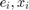 indepedently
- Construct values of 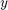
- Estimate the bootstrap by fitting the model
- Compute the standard errors
for i = 1:par.B I_sample = ceil(par.n*rand(1,par.n)); II_sample = ceil(par.n*rand(1,par.n)); esample = vars.ehat(I_sample); xsample(:,1) = vars.x(I_sample,1); xsample(:,2) = vars.x(I_sample,2); ysample = xsample*vars.hbeta+esample; hbeta_sample(i,:) = (xsample\ysample)'; end diff = hbeta_sample-repmat(vars.hbeta',par.B,1); bootVCV = diff'*diff/par.B; OLSVCV = (vars.e'*vars.e)/par.n*inv(vars.x'*vars.x); vars.SEbeta_hat_OLS = sqrt(diag(OLSVCV)); vars.SEbeta_hat_boot = sqrt(diag(bootVCV)); SE_OLS = vars.SEbeta_hat_OLS; SE_Bootstrap = vars.SEbeta_hat_boot; tab_SE = table(Param,SE_OLS,SE_Bootstrap); disp('Parametric Standard Errors:') disp(tab_SE) dert_stop = 1; %----------------------------------------------------------- function data = sim_gp(N,k,sigma,theta) % This function simulates a vector data for the generalized Pareto using the inverse % CDF method: %{ Inputs: N : Number of observations to be simulated k : Index Shape \chi sigma : Scale theta : Threshold location \mu Output: data : NX1 vector of data With shape ξ > 0 and location μ = σ / ξ the GPD is equivalent to the Pareto distribution with scale x m = σ / ξ and shape α = 1 / ξ %} var_x = rand(N,1); data = sigma./k.*((1-var_x).^(-k)-1)+theta; end %----------------------------------------------------------- function data = sim_poisson(N,lambda) % This function simulates a vector data for the generalized Poisson Distribution using the inverse % CDF method: %{ Inputs: N : Number of observations to be simulated lambda : Poisson rate Output: data : NX1 vector of data %} var_x = rand(N,1); data = icdf('Poisson',var_x,lambda); end
Parametric Standard Errors:
Param SE_OLS SE_Bootstrap
__________ ________ ____________
{'beta 0'} 0.012984 0.01324
{'beta 1'} 0.031073 0.030953